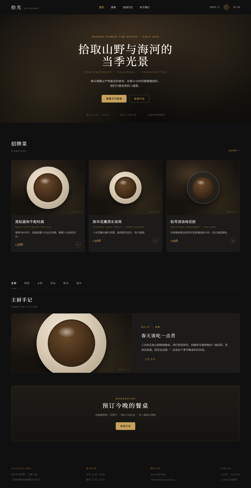
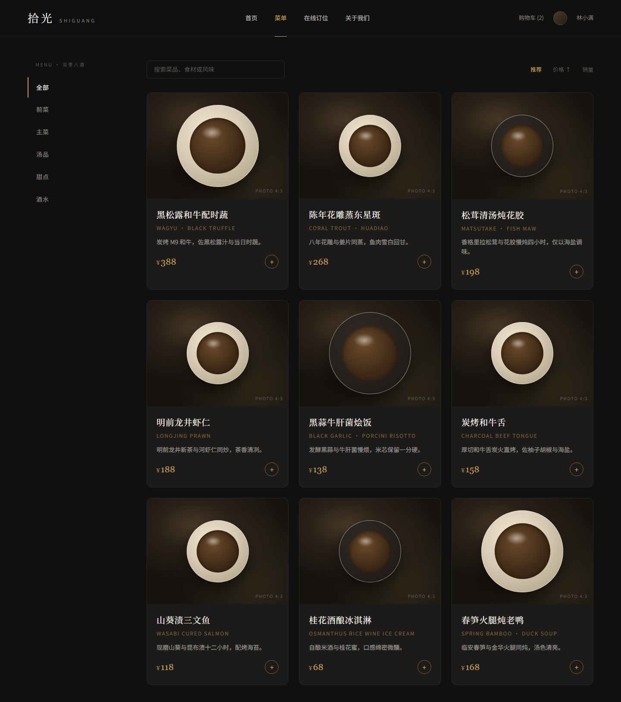
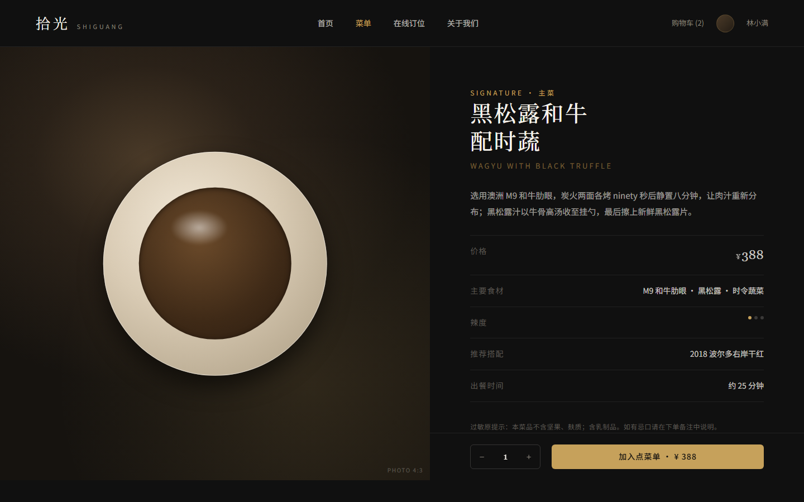
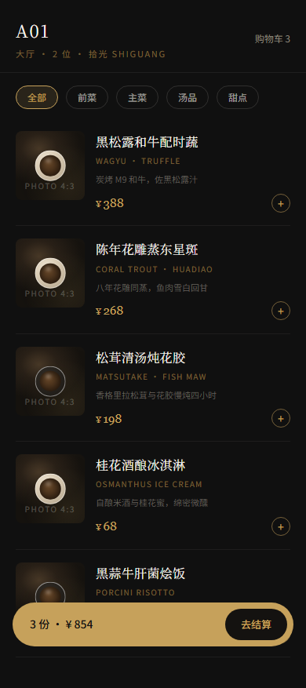
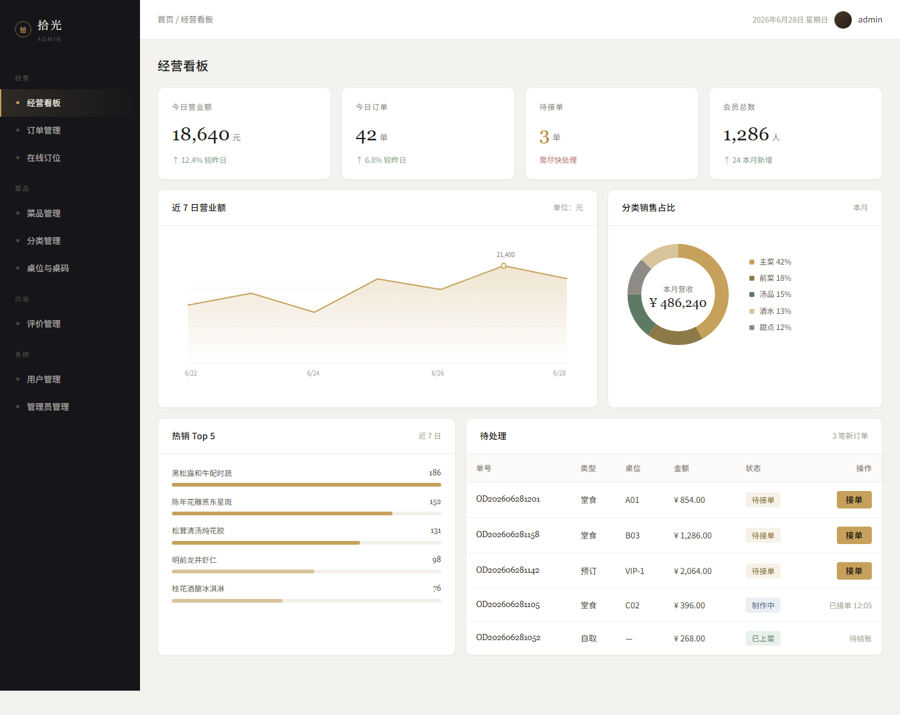
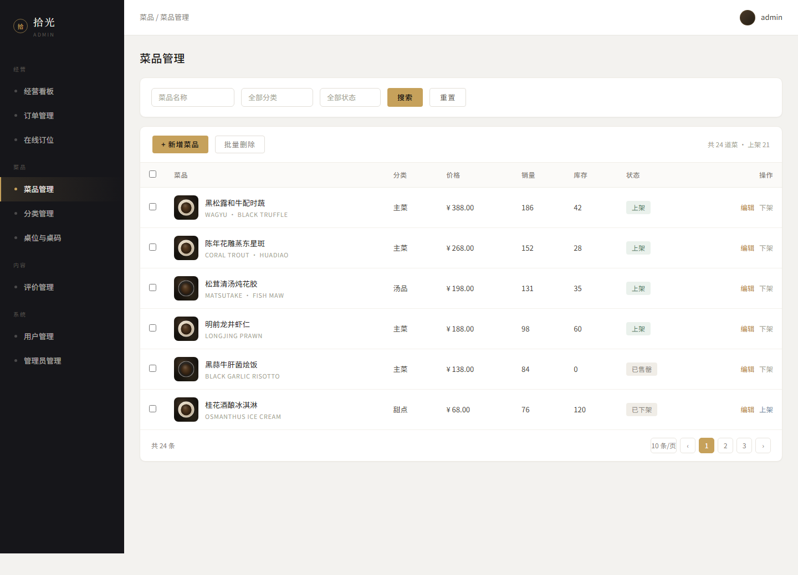
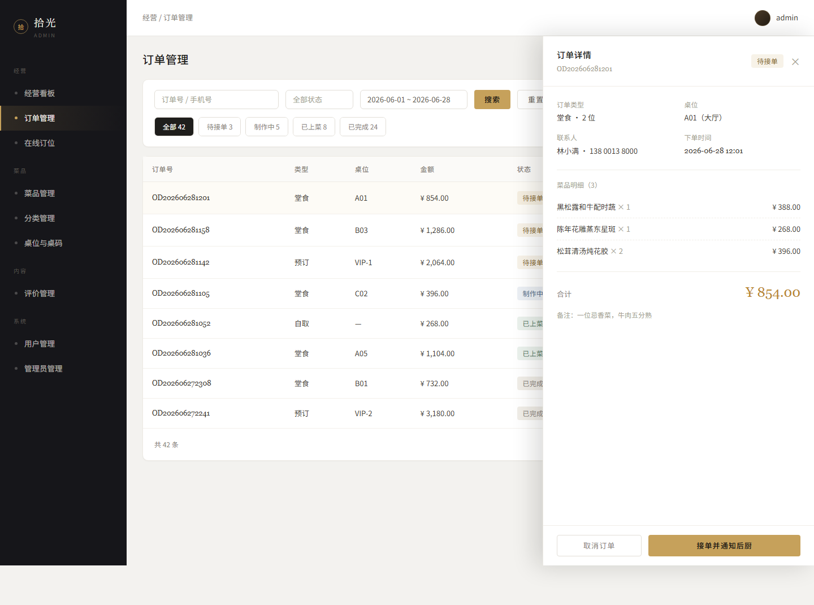

01 前台首页Hero / 招牌菜 / 主厨手记 / 订位 CTA / 页脚 · 对应 M2

02 菜单左侧分类 + 三列菜品网格 + 排序搜索 · 对应 M2

03 菜品详情左图右信息 + 规格 + 过敏原 + 底部固定加购栏 · 对应 M2

04 桌码点餐（手机）扫码进店 · 桌号识别 · 分类 chips · 悬浮购物车 · 对应 M5

05 后台经营看板四个指标卡 + 近 7 日折线 + 分类占比 + 待处理 · 对应 M7

06 后台菜品管理搜索卡 / 操作区 / 表格 + 分页 三段式 · 对应 M1

07 后台订单管理只留 7 列，细节进右侧抽屉 · 对应 M4
